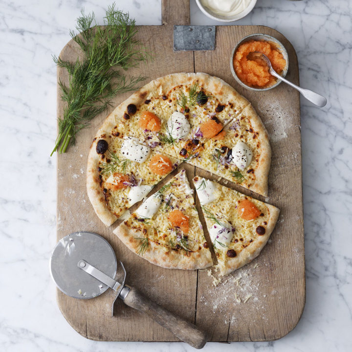

Jag inspireras mycket av streetwear och herrmode. Sneakers var länge en passion.
En sida som inspirerar mig är HighsnobietyJag inspireras mycket av vissa träningsprofiler, såsom Jeff Cavalier som driver AthleanX
samt svenska Styrkelabbet.
Eftersom jag är väldigt intresserad av mat, gillar jag att titta på matlagningstv. En favorit är Claire Saffitz som tidigare var anställd på tidningen Bon Apetit. Hon gör fantatiska bakverk på youtube.
